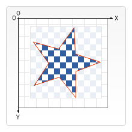

{{CanvasSidebar}} {{PreviousNext(“Web/API/Canvas_API/Tutorial/Transformations”, “Web/API/Canvas_API/Tutorial/Basic_animations”)}}
In all of our previous examples, shapes were always drawn one on top of the other. This is more than adequate for most situations, but it limits the order in which composite shapes are built. We can, however, change this behavior by setting the globalCompositeOperation property. In addition, the clip property allows us to hide unwanted parts of shapes.
globalCompositeOperationWe can not only draw new shapes behind existing shapes but we can also use it to mask off certain areas, clear sections from the canvas (not limited to rectangles like the {{domxref(“CanvasRenderingContext2D.clearRect”, “clearRect()”)}} method does) and more.
See compositing examples for the code of the following examples.
{{EmbedLiveSample(“Compositing_example”, 750, 6750, "" ,“Web/API/Canvas_API/Tutorial/Compositing/Example”)}}
A clipping path is like a normal canvas shape but it acts as a mask to hide unwanted parts of shapes. This is visualized in the image below. The red star shape is our clipping path. Everything that falls outside of this path won’t get drawn on the canvas.

If we compare clipping paths to the globalCompositeOperation property we’ve seen above, we see two compositing modes that achieve more or less the same effect in source-in and source-atop. The most important differences between the two are that clipping paths are never actually drawn to the canvas and the clipping path is never affected by adding new shapes. This makes clipping paths ideal for drawing multiple shapes in a restricted area.
In the chapter about drawing shapes I only mentioned the stroke() and fill() methods, but there’s a third method we can use with paths, called clip().
You use clip() instead of closePath() to close a path and turn it into a clipping path instead of stroking or filling the path.
By default the {{HTMLElement(“canvas”)}} element has a clipping path that’s the exact same size as the canvas itself. In other words, no clipping occurs.
clip exampleIn this example, we’ll use a circular clipping path to restrict the drawing of a set of random stars to a particular region.
function draw() {
var ctx = document.getElementById('canvas').getContext('2d');
ctx.fillRect(0, 0, 150, 150);
ctx.translate(75, 75);
// Create a circular clipping path
ctx.beginPath();
ctx.arc(0, 0, 60, 0, Math.PI * 2, true);
ctx.clip();
// draw background
var lingrad = ctx.createLinearGradient(0, -75, 0, 75);
lingrad.addColorStop(0, '#232256');
lingrad.addColorStop(1, '#143778');
ctx.fillStyle = lingrad;
ctx.fillRect(-75, -75, 150, 150);
// draw stars
for (var j = 1; j < 50; j++) {
ctx.save();
ctx.fillStyle = '#fff';
ctx.translate(75 - Math.floor(Math.random() * 150),
75 - Math.floor(Math.random() * 150));
drawStar(ctx, Math.floor(Math.random() * 4) + 2);
ctx.restore();
}
}
function drawStar(ctx, r) {
ctx.save();
ctx.beginPath();
ctx.moveTo(r, 0);
for (var i = 0; i < 9; i++) {
ctx.rotate(Math.PI / 5);
if (i % 2 === 0) {
ctx.lineTo((r / 0.525731) * 0.200811, 0);
} else {
ctx.lineTo(r, 0);
}
}
ctx.closePath();
ctx.fill();
ctx.restore();
}html hidden <canvas id="canvas" width="150" height="150"></canvas>
js hidden draw();
In the first few lines of code, we draw a black rectangle the size of the canvas as a backdrop, then translate the origin to the center. Next, we create the circular clipping path by drawing an arc and calling clip(). Clipping paths are also part of the canvas save state. If we wanted to keep the original clipping path we could have saved the canvas state before creating the new one.
Everything that’s drawn after creating the clipping path will only appear inside that path. You can see this clearly in the linear gradient that’s drawn next. After this a set of 50 randomly positioned and scaled stars is drawn, using the custom drawStar() function. Again the stars only appear inside the defined clipping path.
{{EmbedLiveSample(“A_clip_example”, “180”, “180”, “canvas_clip.png”)}}
{{PreviousNext(“Web/API/Canvas_API/Tutorial/Transformations”, “Web/API/Canvas_API/Tutorial/Basic_animations”)}}